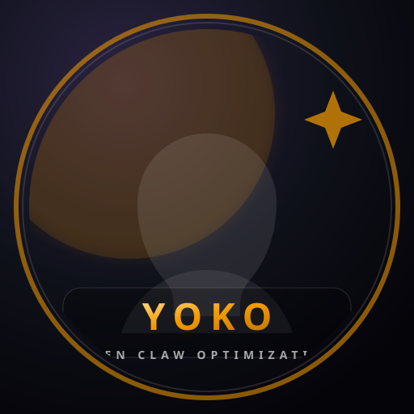
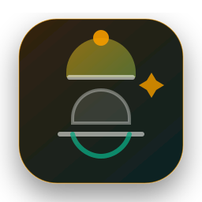

✦
Trent
Sets direction, approves changes, and keeps the whole system aligned with real-world needs. The lounge runs on your call.
The Standard · Director
The human + bot ensemble that keeps the lounge humming: each card describes who they serve, the cron they guard, and the way they stay proactive.
Sets direction, approves changes, and keeps the whole system aligned with real-world needs. The lounge runs on your call.
Heads the travel watch: Bangkok→Japan fares, mission cron, and the Topic Monitor spark that keeps prices in view.
Crafts the morning manifesto, syncs the decisions, and turns vague travel goals into top-three clarity each day.
Scans Ajarn / JobDB / LinkedIn for corridor-friendly roles and feeds the jobs corridor pulse, so interviews stay commutable.
Captures playlists, trip ideas, and the story arcs from the journey—keeps the long-term memory accessible when you need it.

The Standard’s optimization concierge: watches lock health, budgets tokens, and keeps OpenClaw running smooth.
Field experiments, creative pilot work, and ad-hoc prompts (like today’s lounge upgrades) live here so we can iterate fast.
Vision, approvals, and the heartbeat of Mission Control. Your name cards everything else.
Nickname: Command
Keeps the Bangkok→Japan watch, runs the 09:00 flight scan, and posts price alerts straight into the lounge.
Nickname: Jeteyes
Drafts morning manifestos, syncs the decisions, and keeps mission control calm.
Nickname: JazBot
Patrols Ajarn, JobDB, and LinkedIn. The jobs pulse always points to commutable opportunities.
Nickname: Pulse
Encodes playlists and travel thoughts into Supermemory so you can revisit them from any device.
Nickname: Archivist
Monitors tokens, the cron health, and keeps the automation lean so your slack stays quiet.
Nickname: Warden
Experimental prompts, lounge upgrades, and creative tooling that keeps this crew evolving.
Nickname: Lab
Sets direction, approves changes, and keeps the whole system aligned with real-world needs. The lounge runs on your call.
Heads the travel watch: Bangkok→Japan fares, mission cron, and the Topic Monitor spark that keeps prices in view.
Crafts the morning manifesto, syncs the decisions, and turns vague travel goals into top-three clarity each day.
Scans Ajarn / JobDB / LinkedIn for corridor-friendly roles and feeds the jobs corridor pulse, so interviews stay commutable.
Captures playlists, trip ideas, and the story arcs from the journey—keeps the long-term memory accessible when you need it.
The Standard’s optimization concierge: watches lock health, budgets tokens, and keeps OpenClaw running smooth.

The Standard’s travel concierge: keeps the flight plan clean, scans deals, updates city briefs, and makes the itinerary feel effortless.
Field experiments, creative pilot work, and ad-hoc prompts (like today’s lounge upgrades) live here so we can iterate fast.